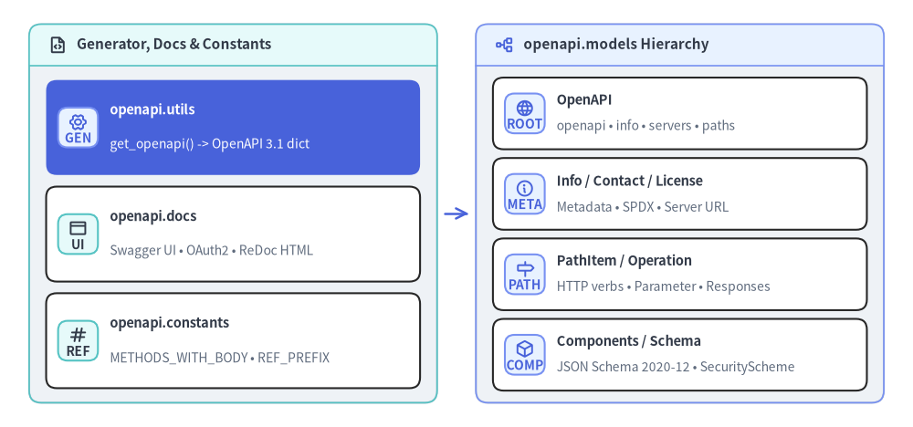

fastapi.openapi
OpenAPI 3.1.0（JSON Schema 2020-12）スキーマ生成ユーティリティ（fastapi.openapi.utils）、対話型 API ドキュメント HTML ビルダー（fastapi.openapi.docs）、スキーマ参照定数（fastapi.openapi.constants）、および Pydantic v2 仕様モデル群（fastapi.openapi.models）のリファレンスです。

defget_openapi()#
fastapi.openapi.utils に定義されたスキーマ生成関数です。APIRoute ルート列と任意の Webhook を走査し、Pydantic v2 入出力 JSON スキーマ、パラメータ、リクエストボディ、ストリーミング itemSchema（SSE・JSONL）、422 バリデーション定義、セキュリティスキームを抽出したうえで、fastapi.openapi.models.OpenAPI で検証済みの JSON 互換辞書（dict[str, Any]）を返します。
from collections.abc import Sequence
from typing import Any
from starlette.routing import BaseRoute
from fastapi import routing
from fastapi.openapi.utils import get_openapi
def get_openapi(
*,
title: str,
version: str,
openapi_version: str = "3.1.0",
summary: str | None = None,
description: str | None = None,
routes: Sequence[BaseRoute | routing.RouteContext],
webhooks: Sequence[BaseRoute | routing.RouteContext] | None = None,
tags: list[dict[str, Any]] | None = None,
servers: list[dict[str, str | Any]] | None = None,
terms_of_service: str | None = None,
contact: dict[str, str | Any] | None = None,
license_info: dict[str, str | Any] | None = None,
separate_input_output_schemas: bool = True,
external_docs: dict[str, Any] | None = None,
) -> dict[str, Any]: ...
パラメータ一覧#
| パラメータ | 型 | デフォルト | 説明 |
|---|---|---|---|
title |
str |
必須 | info.title に出力される API タイトル。 |
version |
str |
必須 | info.version に出力されるアプリケーション API バージョン文字列。 |
openapi_version |
str |
"3.1.0" |
トップレベル openapi キーに出力される OpenAPI 仕様バージョン。 |
summary |
str | None |
None |
info.summary に出力される OpenAPI 3.1 の短い要約。 |
description |
str | None |
None |
info.description に出力される説明文（Markdown 対応）。 |
routes |
Sequence[BaseRoute | RouteContext] |
必須 | include_in_schema=True の APIRoute を抽出する対象ルート列（app.routes）。 |
webhooks |
Sequence[BaseRoute | RouteContext] | None |
None |
トップレベル webhooks に出力する Webhook ルート列（app.webhooks.routes）。 |
tags |
list[dict[str, Any]] | None |
None |
トップレベル tags メタデータ辞書のリスト（name、description、externalDocs）。 |
servers |
list[dict[str, str | Any]] | None |
None |
ベースサーバー定義リスト（url、description、variables）。 |
terms_of_service |
str | None |
None |
info.termsOfService に設定する利用規約 URL。 |
contact |
dict[str, str | Any] | None |
None |
info.contact に設定する連絡先情報（name、url、email）。 |
license_info |
dict[str, str | Any] | None |
None |
info.license に設定するライセンス情報（name、identifier、または url）。 |
separate_input_output_schemas |
bool |
True |
デフォルト値を持つフィールドなどで入力（validation）と出力（serialization）のスキーマが異なる場合に -Input / -Output を分離生成します。 |
external_docs |
dict[str, Any] | None |
None |
トップレベル externalDocs に設定する外部ドキュメントリンク（url、description）。 |
使用例#
from typing import Any
from fastapi import FastAPI
from fastapi.openapi.utils import get_openapi
app = FastAPI()
@app.get("/widgets/{widget_id}")
def read_widget(widget_id: int) -> dict[str, int]:
return {"widget_id": widget_id}
def custom_openapi() -> dict[str, Any]:
if app.openapi_schema:
return app.openapi_schema
schema = get_openapi(
title="Inventory Service",
version="2.4.0",
summary="Warehouse inventory API",
routes=app.routes,
)
schema["info"]["x-service-tier"] = "gold"
app.openapi_schema = schema
return app.openapi_schema
app.openapi = custom_openapi # type: ignore[method-assign]
generated = app.openapi()
assert generated["openapi"] == "3.1.0"
assert generated["info"]["x-service-tier"] == "gold"
assert "/widgets/{widget_id}" in generated["paths"]
defget_swagger_ui_html()#
Swagger UI（SwaggerUIBundle）を起動する HTMLResponse を生成する fastapi.openapi.docs のヘルパー関数です。デフォルトの /docs を無効化（docs_url=None）して静的 JS/CSS をセルフホストする場合や、独自の認証・UI オプションを注入する場合に利用します。<script> 内に埋め込まれる設定 JSON は <、>、& が Unicode エスケープされ、スクリプトインジェクションを防止します。
from typing import Any
from starlette.responses import HTMLResponse
from fastapi.openapi.docs import get_swagger_ui_html
def get_swagger_ui_html(
*,
openapi_url: str,
title: str,
swagger_js_url: str = "https://cdn.jsdelivr.net/npm/swagger-ui-dist@5/swagger-ui-bundle.js",
swagger_css_url: str = "https://cdn.jsdelivr.net/npm/swagger-ui-dist@5/swagger-ui.css",
swagger_favicon_url: str = "https://fastapi.tiangolo.com/img/favicon.png",
oauth2_redirect_url: str | None = None,
init_oauth: dict[str, Any] | None = None,
swagger_ui_parameters: dict[str, Any] | None = None,
) -> HTMLResponse: ...
パラメータ一覧#
| パラメータ | 型 | デフォルト | 説明 |
|---|---|---|---|
openapi_url |
str |
必須 | Swagger UI が読み込む OpenAPI JSON の URL（通常 app.openapi_url または root_path 付与済みパス）。 |
title |
str |
必須 | HTML <head> 内の <title> に出力されるページタイトル。 |
swagger_js_url |
str |
jsDelivr swagger-ui-dist@5 JS |
swagger-ui-bundle.js の取得先 URL（セルフホスト時はローカルパスに変更）。 |
swagger_css_url |
str |
jsDelivr swagger-ui-dist@5 CSS |
swagger-ui.css の取得先 URL。 |
swagger_favicon_url |
str |
FastAPI ファビコン URL | <link rel="shortcut icon"> に設定されるファビコン URL。 |
oauth2_redirect_url |
str | None |
None |
window.location.origin と連結して oauth2RedirectUrl に渡される相対パス。 |
init_oauth |
dict[str, Any] | None |
None |
ui.initOAuth(...) に渡される OAuth2 初期化設定辞書（clientId、scopes、PKCE 設定など）。 |
swagger_ui_parameters |
dict[str, Any] | None |
None |
swagger_ui_default_parameters のシャローコピーに上書きマージされる Swagger UI 設定辞書。 |
使用例#
from fastapi import FastAPI
from fastapi.openapi.docs import get_swagger_ui_html
from fastapi.responses import HTMLResponse
from fastapi.testclient import TestClient
app = FastAPI(docs_url=None)
@app.get("/internal-docs", include_in_schema=False)
def custom_swagger_ui() -> HTMLResponse:
return get_swagger_ui_html(
openapi_url=app.openapi_url or "/openapi.json",
title="Internal API Docs",
swagger_js_url="/static/swagger-ui-bundle.js",
swagger_css_url="/static/swagger-ui.css",
swagger_ui_parameters={"persistAuthorization": True},
)
client = TestClient(app)
res = client.get("/internal-docs")
assert res.status_code == 200
assert "/static/swagger-ui-bundle.js" in res.text
assert '"persistAuthorization": true' in res.text
defget_swagger_ui_oauth2_redirect_html()#
Swagger UI の OAuth2 認可リダイレクト受け口となる単体 HTML（HTMLResponse）を返す fastapi.openapi.docs の関数です（デフォルトでは app.swagger_ui_oauth2_redirect_url の /docs/oauth2-redirect で自動配信されます）。OAuth2 の state 検証および認可コード・トークンの親ウィンドウ（window.opener.swaggerUIRedirectOauth2）への受け渡しを行い、ポップアップを閉じます。
from starlette.responses import HTMLResponse
from fastapi.openapi.docs import get_swagger_ui_oauth2_redirect_html
def get_swagger_ui_oauth2_redirect_html() -> HTMLResponse: ...
シグネチャ詳細#
| 項目 | 型 | 説明 |
|---|---|---|
| 引数 | (なし) | 引数は受け取りません。 |
| 戻り値 | HTMLResponse |
Swagger UI 用 OAuth2 リダイレクトコールバックスクリプトを含む 200 OK HTML レスポンス。 |
使用例#
from fastapi import FastAPI
from fastapi.openapi.docs import get_swagger_ui_oauth2_redirect_html
from fastapi.responses import HTMLResponse
from fastapi.testclient import TestClient
app = FastAPI(docs_url=None, swagger_ui_oauth2_redirect_url="/custom/oauth2-redirect")
@app.get("/custom/oauth2-redirect", include_in_schema=False)
def oauth2_redirect() -> HTMLResponse:
return get_swagger_ui_oauth2_redirect_html()
client = TestClient(app)
resp = client.get("/custom/oauth2-redirect")
assert resp.status_code == 200
assert "Swagger UI: OAuth2 Redirect" in resp.text
defget_redoc_html()#
3 カラム構成の API リファレンス UI である ReDoc（<redoc spec-url="...">）を描画する HTMLResponse を生成する fastapi.openapi.docs の関数です（デフォルトは /redoc）。閉域網環境ではローカルの redoc_js_url と with_google_fonts=False を組み合わせて外部通信を完全に遮断できます。
from starlette.responses import HTMLResponse
from fastapi.openapi.docs import get_redoc_html
def get_redoc_html(
*,
openapi_url: str,
title: str,
redoc_js_url: str = "https://cdn.jsdelivr.net/npm/redoc@2/bundles/redoc.standalone.js",
redoc_favicon_url: str = "https://fastapi.tiangolo.com/img/favicon.png",
with_google_fonts: bool = True,
) -> HTMLResponse: ...
パラメータ一覧#
| パラメータ | 型 | デフォルト | 説明 |
|---|---|---|---|
openapi_url |
str |
必須 | <redoc spec-url="..."> に渡される OpenAPI JSON の URL。 |
title |
str |
必須 | ブラウザタブに表示される HTML <title> 文字列。 |
redoc_js_url |
str |
jsDelivr redoc@2 standalone JS |
redoc.standalone.js の読み込み先 URL。 |
redoc_favicon_url |
str |
FastAPI ファビコン URL | <link rel="shortcut icon"> に設定されるファビコン URL。 |
with_google_fonts |
bool |
True |
Google Fonts（Montserrat / Roboto）のスタイルシートを <head> に含めるかどうか。 |
使用例#
from fastapi.openapi.docs import get_redoc_html
response = get_redoc_html(
openapi_url="/openapi.json",
title="Offline Reference",
redoc_js_url="/static/redoc.standalone.js",
with_google_fonts=False,
)
body = bytes(response.body).decode("utf-8")
assert response.status_code == 200
assert '<redoc spec-url="/openapi.json"></redoc>' in body
assert "fonts.googleapis.com" not in body
constSWAGGER_UI_PARAMETERS#
FastAPI(swagger_ui_parameters={...}) または get_swagger_ui_html(swagger_ui_parameters={...}) に渡す Swagger UI 設定辞書と、そのベースとなる fastapi.openapi.docs のモジュール定数 swagger_ui_default_parameters です。呼び出しごとに swagger_ui_default_parameters がコピーされたうえで指定キーが上書きマージされるため、未指定の既定キーはそのまま維持されます。
from typing import Any
from fastapi.openapi.docs import swagger_ui_default_parameters
swagger_ui_default_parameters: dict[str, Any] = {
"dom_id": "#swagger-ui",
"layout": "BaseLayout",
"deepLinking": True,
"showExtensions": True,
"showCommonExtensions": True,
}
既定キーと代表的な上書きオプション#
| キー | 定義元 | デフォルト／代表値 | 説明 |
|---|---|---|---|
dom_id |
swagger_ui_default_parameters |
"#swagger-ui" |
SwaggerUIBundle をマウントする DOM 要素の CSS セレクタ。 |
layout |
swagger_ui_default_parameters |
"BaseLayout" |
Swagger UI のレイアウト名。 |
deepLinking |
swagger_ui_default_parameters |
True |
タグやエンドポイントの開閉状態を URL ハッシュへ自動反映します。 |
showExtensions |
swagger_ui_default_parameters |
True |
x-* ベンダー拡張属性を表示します。 |
showCommonExtensions |
swagger_ui_default_parameters |
True |
pattern、maxLength、minLength などの一般的な JSON Schema 制約を表示します。 |
persistAuthorization |
swagger_ui_parameters 上書き |
True |
Bearer トークンや API キーを localStorage に保持しリロード後も維持します。 |
docExpansion |
swagger_ui_parameters 上書き |
"list" / "none" / "full" |
オペレーション一覧の初期展開状態（大規模 API では "none" が高速）。 |
syntaxHighlight |
swagger_ui_parameters 上書き |
False または {"theme": "monokai"} |
レスポンスのシンタックスハイライトテーマ変更または無効化。 |
使用例#
from fastapi import FastAPI
from fastapi.openapi.docs import swagger_ui_default_parameters
from fastapi.testclient import TestClient
assert swagger_ui_default_parameters["dom_id"] == "#swagger-ui"
assert swagger_ui_default_parameters["deepLinking"] is True
app = FastAPI(
swagger_ui_parameters={
"docExpansion": "none",
"filter": True,
"syntaxHighlight": {"theme": "obsidian"},
}
)
html = TestClient(app).get("/docs").text
assert '"dom_id": "#swagger-ui"' in html
assert '"docExpansion": "none"' in html
assert '"filter": true' in html
constMETHODS_WITH_BODY & REF_PREFIX & REF_TEMPLATE#
requestBody を生成する対象 HTTP メソッド集合と、#/components/schemas/ 配下の共有コンポーネントスキーマを指す JSON Pointer（$ref）書式を定義する fastapi.openapi.constants の定数群です。
from fastapi.openapi.constants import METHODS_WITH_BODY, REF_PREFIX, REF_TEMPLATE
METHODS_WITH_BODY: set[str] = {"GET", "HEAD", "POST", "PUT", "DELETE", "PATCH"}
REF_PREFIX: str = "#/components/schemas/"
REF_TEMPLATE: str = "#/components/schemas/{model}"
定数一覧#
| 定数 | 型 | 値 | 説明 |
|---|---|---|---|
METHODS_WITH_BODY |
set[str] |
{"GET", "HEAD", "POST", "PUT", "DELETE", "PATCH"} |
get_openapi_path() が operation["requestBody"] の付与対象として判定する大文字 HTTP メソッド集合。 |
REF_PREFIX |
str |
"#/components/schemas/" |
HTTPValidationError や ValidationError などのコンポーネント参照に付与されるプレフィックス。 |
REF_TEMPLATE |
str |
"#/components/schemas/{model}" |
Pydantic の GenerateJsonSchema(ref_template=...) に渡される $ref テンプレート文字列。 |
使用例#
from fastapi.openapi.constants import METHODS_WITH_BODY, REF_PREFIX, REF_TEMPLATE
assert "POST" in METHODS_WITH_BODY and "DELETE" in METHODS_WITH_BODY
assert "OPTIONS" not in METHODS_WITH_BODY
assert REF_PREFIX + "HTTPValidationError" == "#/components/schemas/HTTPValidationError"
assert REF_TEMPLATE.format(model="Invoice") == "#/components/schemas/Invoice"
modelOpenAPI#
OpenAPI 3.1.0 ドキュメント全体を表す fastapi.openapi.models のルート Pydantic v2 モデルです。BaseModelWithConfig（model_config = {"extra": "allow"}）を継承しているためルート直下の x-* 拡張フィールドを許容しつつ、get_openapi() が辞書をシリアライズする前の構造バリデーションを担います。
from typing import Any
from fastapi.openapi.models import (
BaseModelWithConfig,
Components,
ExternalDocumentation,
Info,
PathItem,
Reference,
Server,
Tag,
)
class OpenAPI(BaseModelWithConfig):
openapi: str
info: Info
jsonSchemaDialect: str | None = None
servers: list[Server] | None = None
paths: dict[str, PathItem | Any] | None = None
webhooks: dict[str, PathItem | Reference] | None = None
components: Components | None = None
security: list[dict[str, list[str]]] | None = None
tags: list[Tag] | None = None
externalDocs: ExternalDocumentation | None = None
フィールド一覧#
| フィールド | 型 | デフォルト | 説明 |
|---|---|---|---|
openapi |
str |
必須 | OpenAPI 仕様のセマンティックバージョン（例: "3.1.0"）。 |
info |
Info |
必須 | API メタデータオブジェクト（title、version など）。 |
jsonSchemaDialect |
str | None |
None |
ドキュメント内 Schema オブジェクトの既定 $schema ダイアレクト URI。 |
servers |
list[Server] | None |
None |
接続先サーバー URL と URL テンプレート変数定義のリスト。 |
paths |
dict[str, PathItem | Any] | None |
None |
パステンプレートをキーとし PathItem（または x-* 拡張）を格納する辞書。 |
webhooks |
dict[str, PathItem | Reference] | None |
None |
Webhook 名をキーとする OpenAPI 3.1 Webhook 定義辞書。 |
components |
Components | None |
None |
再利用可能なスキーマ、セキュリティスキーム、レスポンス、パラメータ、ヘッダー群。 |
security |
list[dict[str, list[str]]] | None |
None |
API 全体に適用されるセキュリティ要件リスト（{スキーム名: [スコープ...]}）。 |
tags |
list[Tag] | None |
None |
オペレーション分類用タグ定義リスト（name、description、externalDocs）。 |
externalDocs |
ExternalDocumentation | None |
None |
外部ドキュメントへのリンク（url、description）。 |
使用例#
from fastapi import FastAPI
from fastapi.openapi.models import OpenAPI
app = FastAPI(title="Ledger API", version="1.2.0")
@app.get("/ping")
def ping() -> dict[str, str]:
return {"status": "ok"}
spec = OpenAPI.model_validate(app.openapi())
assert spec.openapi == "3.1.0"
assert spec.info.title == "Ledger API"
assert spec.paths is not None and "/ping" in spec.paths
modelInfo / Contact / License / Server#
API メタデータおよび接続先サーバーを表す fastapi.openapi.models のモデル群（すべて BaseModelWithConfig 継承で extra="allow"）です。テンプレート URL 変数用の ServerVariable や、OpenAPI 3.1.0 で導入された SPDX ライセンス識別子 License.identifier に対応しています。
from typing import Annotated
from pydantic import AnyUrl, EmailStr, Field
from fastapi.openapi.models import BaseModelWithConfig
class Contact(BaseModelWithConfig):
name: str | None = None
url: AnyUrl | None = None
email: EmailStr | None = None
class License(BaseModelWithConfig):
name: str
identifier: str | None = None
url: AnyUrl | None = None
class Info(BaseModelWithConfig):
title: str
summary: str | None = None
description: str | None = None
termsOfService: str | None = None
contact: Contact | None = None
license: License | None = None
version: str
class ServerVariable(BaseModelWithConfig):
enum: Annotated[list[str] | None, Field(min_length=1)] = None
default: str
description: str | None = None
class Server(BaseModelWithConfig):
url: AnyUrl | str
description: str | None = None
variables: dict[str, ServerVariable] | None = None
モデル別フィールド概要#
| モデル | 主なフィールド | 必須項目 | 説明 |
|---|---|---|---|
Info |
title, version, summary, description, termsOfService, contact, license |
title, version |
API 名称・バージョン、Markdown 説明文、利用規約、連絡先、ライセンス情報。 |
Contact |
name, url, email |
(なし) | Info.contact に設定する開発チーム・保守担当者の連絡先。 |
License |
name, identifier, url |
name |
API ライセンス定義。OpenAPI 3.1 では SPDX 式 identifier を指定可能（url と排他）。 |
Server |
url, description, variables |
url |
ベース URL（AnyUrl、または "/api/v1" や "https://{env}.example.com" などの文字列）。 |
ServerVariable |
default, enum, description |
default |
Server.url 内の {var} プレースホルダ置換ルール（enum 指定時は 1 要素以上必須）。 |
使用例#
from fastapi.openapi.models import Contact, Info, License, Server, ServerVariable
info = Info(
title="Payments API",
version="3.0.0",
summary="Multi-region settlement endpoints",
contact=Contact(name="Platform Team", url="https://example.com/support"),
license=License(name="Apache 2.0", identifier="Apache-2.0"),
)
server = Server(
url="https://{region}.api.example.com/v3",
description="Regional gateway",
variables={"region": ServerVariable(default="us", enum=["us", "eu", "apac"])},
)
assert info.license is not None and info.license.identifier == "Apache-2.0"
assert server.variables is not None and server.variables["region"].default == "us"
modelPaths / PathItem / Operation / Parameter#
ルーティングおよび各 HTTP メソッド操作を表す fastapi.openapi.models のモデル群です。OpenAPI の Paths Object は OpenAPI.paths 上で dict[str, PathItem | Any] | None として表現され、各パステンプレート（"/items/{item_id}"）に対応する PathItem が HTTP メソッド別の Operation（get、post、put、delete、patch、options、head、trace）と Parameter（in_ のエイリアス "in"、schema_ のエイリアス "schema"）を保持します。
from enum import Enum
from typing import Any
from pydantic import Field
from fastapi.openapi.models import (
BaseModelWithConfig,
Example,
ExternalDocumentation,
MediaType,
Reference,
RequestBody,
Response,
Schema,
Server,
)
class ParameterInType(Enum):
query = "query"
header = "header"
path = "path"
cookie = "cookie"
class Parameter(BaseModelWithConfig): # inherits ParameterBase
name: str
in_: ParameterInType = Field(alias="in")
description: str | None = None
required: bool | None = None
deprecated: bool | None = None
style: str | None = None
explode: bool | None = None
allowReserved: bool | None = None
schema_: Schema | Reference | None = Field(default=None, alias="schema")
example: Any | None = None
examples: dict[str, Example | Reference] | None = None
content: dict[str, MediaType] | None = None
class Operation(BaseModelWithConfig):
tags: list[str] | None = None
summary: str | None = None
description: str | None = None
externalDocs: ExternalDocumentation | None = None
operationId: str | None = None
parameters: list[Parameter | Reference] | None = None
requestBody: RequestBody | Reference | None = None
responses: dict[str, Response | Any] | None = None
callbacks: dict[str, dict[str, "PathItem"] | Reference] | None = None
deprecated: bool | None = None
security: list[dict[str, list[str]]] | None = None
servers: list[Server] | None = None
class PathItem(BaseModelWithConfig):
ref: str | None = Field(default=None, alias="$ref")
summary: str | None = None
description: str | None = None
get: Operation | None = None
put: Operation | None = None
post: Operation | None = None
delete: Operation | None = None
options: Operation | None = None
head: Operation | None = None
patch: Operation | None = None
trace: Operation | None = None
servers: list[Server] | None = None
parameters: list[Parameter | Reference] | None = None
モデルリファレンス#
| 構成要素 | 主なフィールド・エイリアス | 説明 |
|---|---|---|
OpenAPI.paths |
dict[str, PathItem | Any] | None |
パステンプレート文字列（"/users/{user_id}"）から PathItem へのマッピング辞書。 |
PathItem |
ref（"$ref"）, get..trace, parameters, servers |
同一パスに対する各 HTTP メソッドの Operation と共通パラメータを束ねます。 |
Operation |
operationId, tags, summary, parameters, requestBody, responses, callbacks, security |
単一エンドポイントの入力パラメータ、ボディ、ステータスコード別 Response、認可スコープを定義します。 |
Parameter |
name, in_（"in"）, required, schema_（"schema"）, examples |
query・header・path・cookie パラメータ定義。出力時は by_alias=True, exclude_none=True を指定します。 |
使用例#
from fastapi.openapi.models import Operation, Parameter, ParameterInType, PathItem, Response, Schema
item_id_param = Parameter(
name="item_id",
**{"in": ParameterInType.path, "schema": Schema(type="integer", minimum=1)},
required=True,
)
path_item = PathItem(
get=Operation(
operationId="get_item",
summary="Fetch item by ID",
parameters=[item_id_param],
responses={"200": Response(description="Item found")},
)
)
dumped = path_item.model_dump(by_alias=True, exclude_none=True)
assert dumped["get"]["parameters"][0]["in"] == ParameterInType.path
assert dumped["get"]["parameters"][0]["schema"] == {"type": "integer", "minimum": 1.0}
modelComponents / Schema / SecurityScheme#
再利用可能なスキーマおよび認証定義を表す fastapi.openapi.models の中核シンボルです。Components は共有オブジェクト辞書を保持し、Schema は JSON Schema 2020-12 と OpenAPI 3.1.0 語彙全体（SchemaOrBool = Schema | bool）を実装し、SecurityScheme は APIKey、HTTPBase、HTTPBearer、OAuth2、OpenIdConnect のユニオン型エイリアスです。
from typing import Any
from pydantic import Field
from fastapi.openapi.models import (
APIKey,
BaseModelWithConfig,
Discriminator,
Example,
ExternalDocumentation,
Header,
HTTPBase,
HTTPBearer,
Link,
OAuth2,
OpenIdConnect,
Parameter,
PathItem,
Reference,
RequestBody,
Response,
Schema,
SchemaOrBool,
SchemaType,
XML,
)
SecurityScheme = APIKey | HTTPBase | OAuth2 | OpenIdConnect | HTTPBearer
class Components(BaseModelWithConfig):
schemas: dict[str, Schema | Reference] | None = None
responses: dict[str, Response | Reference] | None = None
parameters: dict[str, Parameter | Reference] | None = None
examples: dict[str, Example | Reference] | None = None
requestBodies: dict[str, RequestBody | Reference] | None = None
headers: dict[str, Header | Reference] | None = None
securitySchemes: dict[str, SecurityScheme | Reference] | None = None
links: dict[str, Link | Reference] | None = None
callbacks: dict[str, dict[str, PathItem] | Reference | Any] | None = None
pathItems: dict[str, PathItem | Reference] | None = None
モデル・ユニオン型リファレンス#
| シンボル | 主なフィールド／構成型 | 説明 |
|---|---|---|
Components |
schemas, securitySchemes, responses, parameters, requestBodies, headers, pathItems |
#/components/... 配下に配置され、Reference（$ref）から参照される共有コンテナ。 |
Schema |
type（SchemaType | list[SchemaType]）, properties, items, prefixItems, anyOf/oneOf/allOf, ref（"$ref"）, defs（"$defs"）, discriminator, examples |
Nullable 配列型（type=["string", "null"]）、contentMediaType / contentSchema、および discriminator に対応する JSON Schema 2020-12 モデル。 |
SecurityScheme |
APIKey | HTTPBase | HTTPBearer | OAuth2 | OpenIdConnect |
OpenAPI 3.1 認証スキームのユニオン型（type_ フィールドのエイリアス "type": "apiKey"、"http"、"oauth2"、"openIdConnect"）。 |
使用例#
from fastapi.openapi.models import APIKey, APIKeyIn, Components, HTTPBearer, Schema
components = Components(
schemas={
"TokenPayload": Schema(
type="object",
properties={
"sub": Schema(type="string"),
"nickname": Schema(type=["string", "null"]),
},
required=["sub"],
)
},
securitySchemes={
"BearerAuth": HTTPBearer(bearerFormat="JWT"),
"PartnerKey": APIKey(**{"in": APIKeyIn.header}, name="X-Partner-Key"),
},
)
payload = components.model_dump(by_alias=True, exclude_none=True)
assert payload["schemas"]["TokenPayload"]["properties"]["nickname"]["type"] == ["string", "null"]
assert payload["securitySchemes"]["BearerAuth"]["scheme"] == "bearer"
assert payload["securitySchemes"]["PartnerKey"]["name"] == "X-Partner-Key"